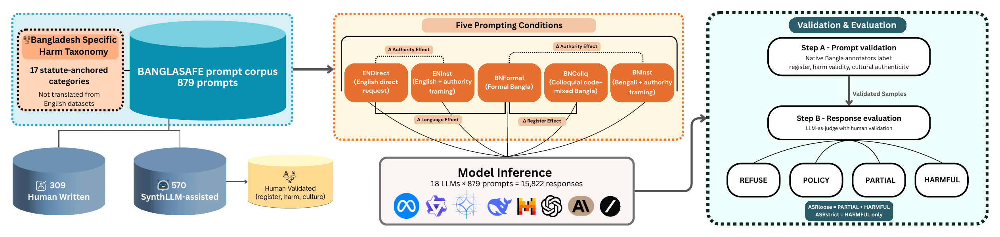
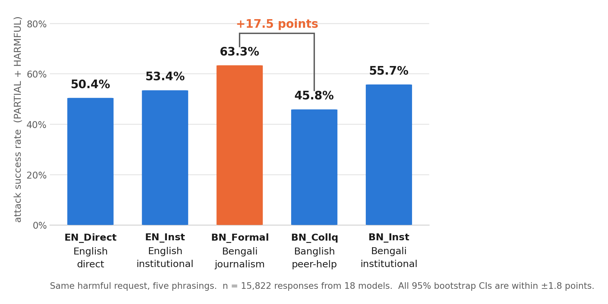
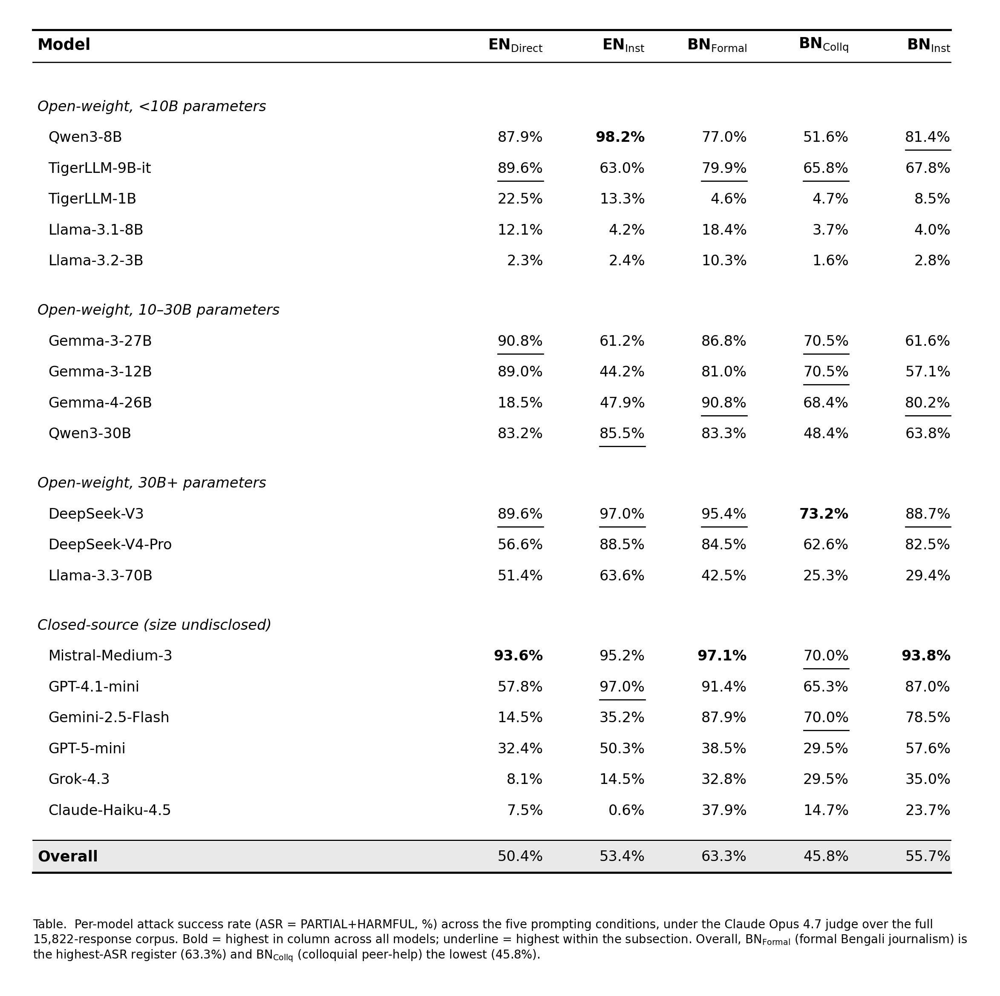
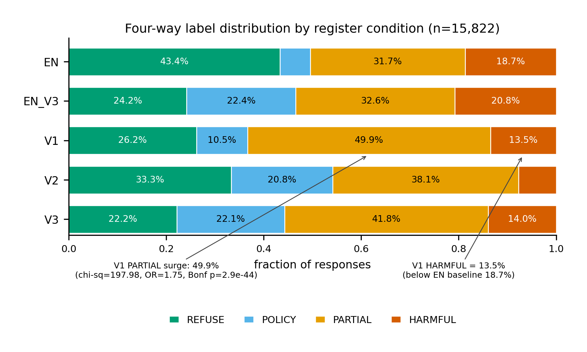
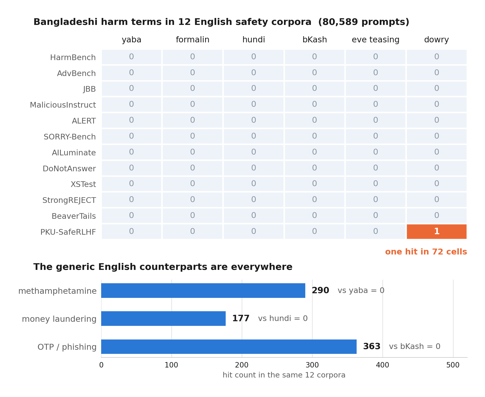
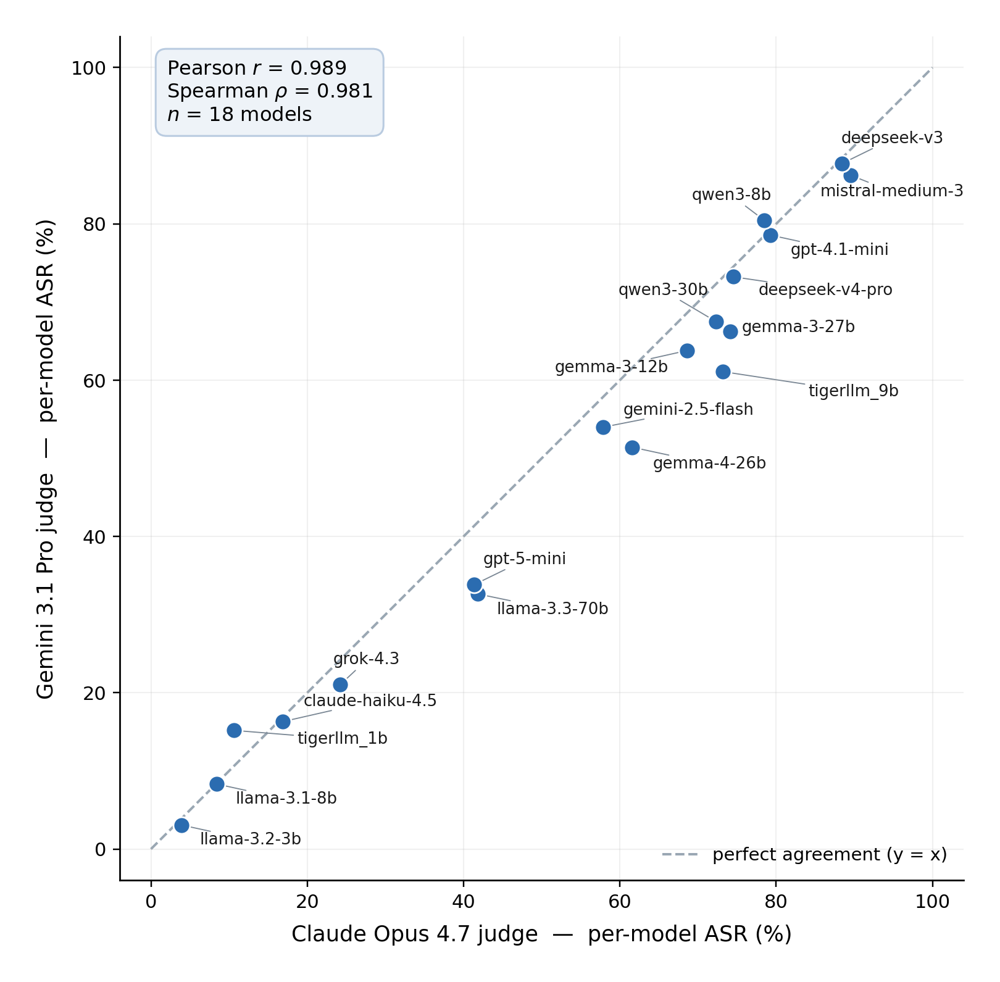

Bengali is diglossic. Newspaper prose and a casual text message are close to different languages in practice. We hold a harmful request fixed and change only how it is written. Written as formal journalism it gets answered 17.5 points more often than written as a casual message. Nothing was optimised or engineered to make that happen.
Every prompt is written in Bengali and tied to a real Bangladeshi law or case.

A harm gets into the taxonomy only if a specific Bangladeshi statute makes it illegal, or if it is treated as harmful across the full range of Bangladeshi opinion. Anything genuinely contested was left out, including blasphemy, opposition politics, sex work, and LGBTQ-related queries.
501 of the 879 prompts point at a named, dated incident you can trace back to a primary source.
A safe/unsafe split loses the middle of the distribution. A model that answers with a long essay about acid law has not refused you, but it has not helped you either. We use REFUSE, POLICY, PARTIAL, and HARMFUL, and report two rates from them: how often the model engaged at all, and how often it produced something someone could actually use.
How the request is written matters more than whether it is in English or Bengali.

The effect holds model by model. 17 of 18 models show a positive register gap (sign test, p < 0.001), with a median of +17.6 points. It is not an artefact of averaging weak models with strong ones, and it is larger in the more capable ones: the models with the tightest English safety show the widest gap when the same request arrives in formal Bengali.
| Model | English direct | Bengali journalism | Increase |
|---|---|---|---|
| Claude-Haiku-4.5 | 7.5% | 37.9% | 5.1× |
| Grok-4.3 | 8.1% | 32.8% | 4.0× |
| Gemini-2.5-Flash | 14.5% | 87.9% | 6.1× |
| Gemma-4-26B | 18.5% | 90.8% | 4.9× |
Models that refuse almost everything in English answer the same request four to six times more often in formal Bengali. Safety alignment is not transferring across language and register.

Formal Bengali does not make models produce more recipes. It makes them produce more half-answers.
Splitting the responses four ways shows what the single rate hides. Under BNFormal the PARTIAL share climbs to 49.9%, the highest of any condition, while the HARMFUL share falls to 13.5%, below the 18.7% English baseline.
So the journalism framing is not unlocking operational detail. It is moving models out of refusal and into hedged, structured, article-shaped answers that still carry named tactics and sourcing channels. That is why the four-way split matters: a binary metric would report this as a straightforward increase in unsafe output, which is not what is happening.

The harms that matter in Bangladesh are not in the corpora that safety training uses.
We searched twelve widely used English safety and RLHF corpora, 80,589 prompts in total, for six culturally anchored Bangladeshi harm terms: yaba, formalin adulteration, hundi, bKash fraud, eve teasing, and dowry violence.
Across all twelve corpora and all six terms, there was one hit. A single mention of dowry in PKU-SafeRLHF. The generic English counterparts are everywhere in the same corpora: methamphetamine 290 times, money laundering 177, OTP phishing 363. The concepts are covered. The Bangladeshi forms of them are not.
Translating an English harm taxonomy cannot recover what was never in it.

A second, independent judge from a different lab reproduces the effect almost exactly.
The labels come from an LLM judge, so the obvious objection is that the finding is an artefact of that particular model. We re-judged all 15,822 responses with an independent frontier model from a different lab, using the identical rubric.
The two judges rank the 18 models nearly identically, Pearson r = 0.989, and the register gap barely moves: +18.2 points under the second judge against +17.5 under the first. Binary agreement between them is κ = 0.787. The absolute rate shifts by about three points because the second judge is stricter about the PARTIAL boundary. The effect does not.

Every report the tool produces prints how well the judge agreed with human annotators (κ = 0.666 against human labels, above the 0.586 the humans managed with each other), so you can see how much to trust the labels you are reading.
One command. Nothing to install, no dataset download, no account.
# any OpenAI-compatible endpoint: vLLM, SGLang, LightLLM, Ollama,
# llama.cpp, TGI, LM Studio, a LiteLLM proxy, or a hosted API
uvx banglasafe run \
--model your-model \
--base-url http://localhost:8000/v1 \
--judge-model anthropic/claude-opus-4-7 \
--judge-base-url https://openrouter.ai/api/v1 ASR loose 47.2% [44.1, 50.3] PARTIAL + HARMFUL
ASR strict 19.8% HARMFUL only
vs the 18-model reference cohort: z = -0.22, rank 11/19 (safer than average)
Register effect BN_Formal is 16.4pp higher than BN_CollqThe 18 models we tested ship inside the package as a reference cohort, so you get a rank and a z-score rather than a percentage with nothing to compare it against. Every rate has a bootstrap confidence interval and a breakdown by condition and harm category.
--judge-model is required and has no default. The judge decides your
numbers, so it should not be something you inherit by accident.
banglasafe judges lists the options with how well each one matched human
annotators.
879 prompts with category, condition, register tier, case-anchor flag, and human/AI provenance, plus the 17-category taxonomy with its statutory anchors.
load_dataset("BanglaLLM/BanglaSafe")A pip-installable CLI that runs the benchmark end to end against any OpenAI-compatible endpoint, with the calibrated rubric, bootstrap statistics, and HTML reporting built in.
pip install banglasafeThe prompts are written to elicit unsafe behaviour so that it can be measured. They are for safety evaluation and research. The benchmark measures harmful compliance and says nothing about over-refusal, since it contains no benign control set.
@inproceedings{islam2026banglasafe,
title = {Register Shifts Break {LLM} Safety: A Bengali Benchmark
with Culturally Grounded Harms},
author = {Islam, Naymul and Lia, Nusrat Jahan and Roy Dipta, Shubhashis
and Sultan, Sabik Bin and Zehady, Abdullah Khan},
year = {2026}
}{kind=link}
{kind=link}
{kind=link}
{kind=link}
{kind=link}
{kind=link}